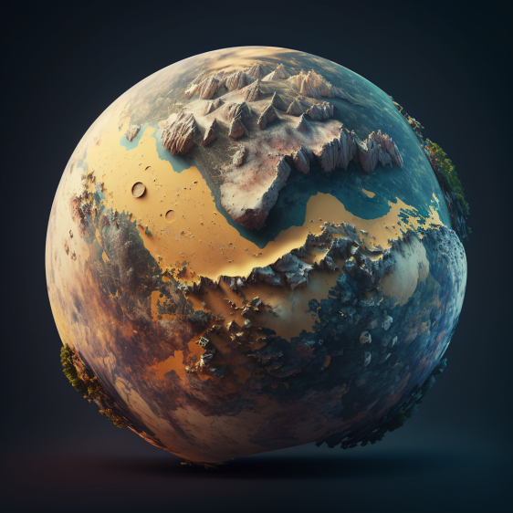

Planeta Montanha
Uma imersão cultural em grande estilo, que não pode faltar no seu roteiro intergaláctico. O passeio nas enormes montanhas de Planeta Montanha é realizado por pontes suspensas, onde é possível encontrar pedras semi-preciosas como ágata, ametista, topázio, jaspe e diferentes tipos de quartzo. Além dos diferentes setores das montanhas, o local também possui oficinas e salas de exposições.
USD 59.999,99